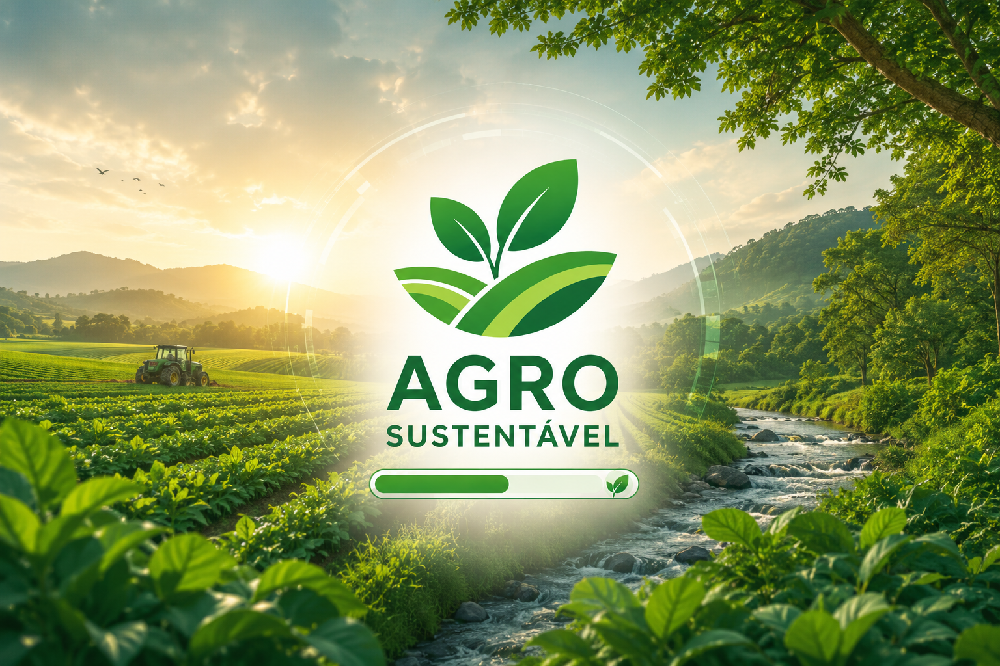

O Agro Forte é muito importante para a sociedade, pois produz alimentos, gera empregos e contribui para o desenvolvimento do país. No entanto, para garantir um futuro sustentável, é necessário equilibrar a produção agrícola e a preservação do meio ambiente. Agora, você terá que fazer escolhas e descobrir como suas atitudes podem influenciar o futuro do agro.
Você decide utilizar os recursos naturais com responsabilidade. Ao preservar o solo, economizar água e proteger as áreas verdes, percebe que é possível aumentar a produção agrícola sem prejudicar a natureza.
Você escolhe utilizar os recursos naturais sem planejamento. Com o passar do tempo, percebe que o desperdício de água, a degradação do solo e o desmatamento prejudicam a agricultura e o meio ambiente.
Você aprende que práticas como a rotação de culturas, a preservação das nascentes e o uso de novas tecnologias ajudam a conservar os recursos naturais e aumentar a produtividade no campo.
Você decide encerrar sua jornada. Mesmo assim, entende que pequenas atitudes sustentáveis fazem a diferença e contribuem para um Agro Forte e um futuro melhor. Para saber como anda o Agro acesse o site https://www.gov.br/agricultura/pt-br/.
Percebendo os prejuízos causados, você resolve recuperar áreas degradadas, proteger as fontes de água e adotar práticas sustentáveis para melhorar a produção agrícola.
Você continua explorando os recursos naturais sem pensar nas consequências. Aos poucos, a produção diminui, o solo perde sua qualidade e a falta de água se torna um grande problema.
Você percebe que o uso inadequado dos recursos naturais afeta não apenas o meio ambiente, mas também a economia, a produção de alimentos e a qualidade de vida das futuras gerações.
Depois de todas essas experiências, você compreende que o verdadeiro Agro Forte é aquele que busca o equilíbrio entre a produção e a preservação do meio ambiente, garantindo desenvolvimento sustentável.
Ao aplicar práticas sustentáveis, você percebe que a produção aumenta, os recursos naturais são preservados e a comunidade também é beneficiada. Todos ganham com essas atitudes.
Ao ignorar os cuidados com o meio ambiente, você percebe que os prejuízos aumentam e que a falta de planejamento coloca em risco o futuro da agricultura e das próximas gerações.
Parabéns! Suas escolhas mostraram que é possível produzir alimentos, preservar a natureza e garantir um futuro sustentável. Você descobriu que um Agro Forte depende do equilíbrio entre produção e meio ambiente. Para saber mais sobre o agro acesse https://www.gov.br/agricultura/pt-br/.
Com essa experiência, você aprende que ainda há tempo para mudar. Cuidar dos recursos naturais e adotar práticas sustentáveis é a melhor maneira de fortalecer o agro e garantir um futuro melhor para todos. Para saber mais sobre o agro acesse https://www.gov.br/agricultura/pt-br/.